- 2-month timeline to deliver a functional foundation
- Limited engineering bandwidth due to existing web-app delays
- Pre-launch product with no direct user access
The PRD established that we needed two separate admin environments: Community Portal for community organizers to manage their own communities. Company Portal for Abulé's internal teams to manage platform-wide operations.
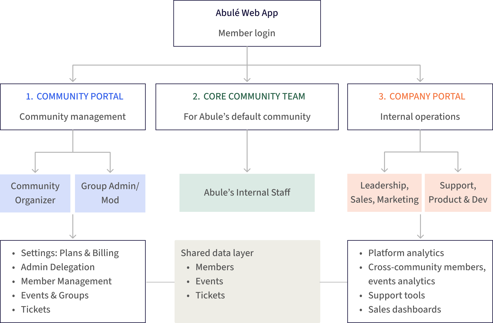
The original idea was to place the Core Community Team in the Company Portal since they're Abulé employees. But when I mapped their daily tasks, it was clear they worked like community managers, creating events, moderating members, and managing groups. I built a side-by-side comparison of both options and brought it to the team.
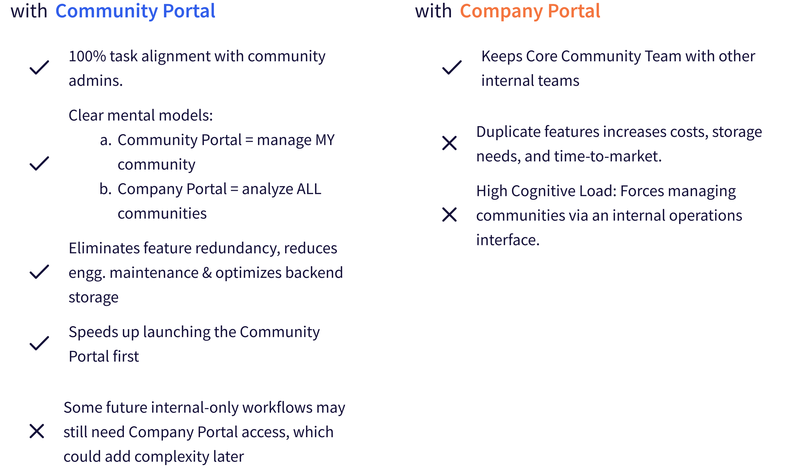
The engineering lead's only concern was that future internal tools might make Community Portal's codebase complex. But the only real difference we found was hiding the billing tab for Abulé's own community, which was easy to handle. So we moved ahead with the Community Portal.
Seeing the side-by-side comparison helped the engineering lead realize that by changing where the Core Community Team logged in, we could avoid duplicate auth, role management, and data access work, saving ~25–30% of engineering effort (about 3–4 weeks).
With the architecture settled, I needed to define who could do what inside the Community Portal. Through the founder's sales conversations with potential community organizers, I designed a six-level hierarchy where each role inherits all permissions from the levels below it.
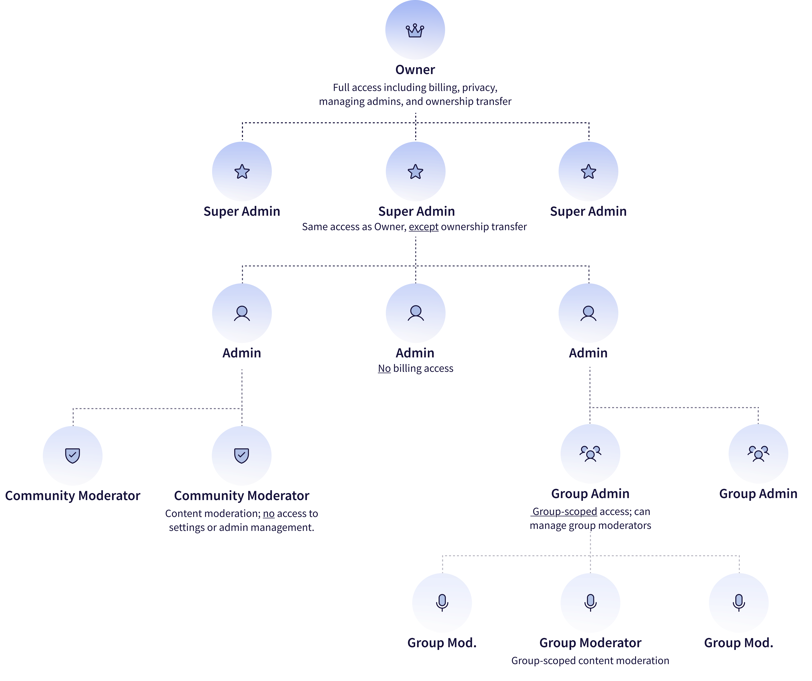
Three governance principles:
Inheritance: higher roles automatically include all lower role permissions
Scope-based access: community-wide vs. group-specific permissions are distinct
At or below level: admins can only manage roles beneath their own
Early research showed admins spent most of their time on active community management, with settings and backend tasks accessed occasionally. I structured the portal in two primary areas in the IA — management tasks and backend tasks. These 2 areas divided in 10 sections with role-based access built in from day one.
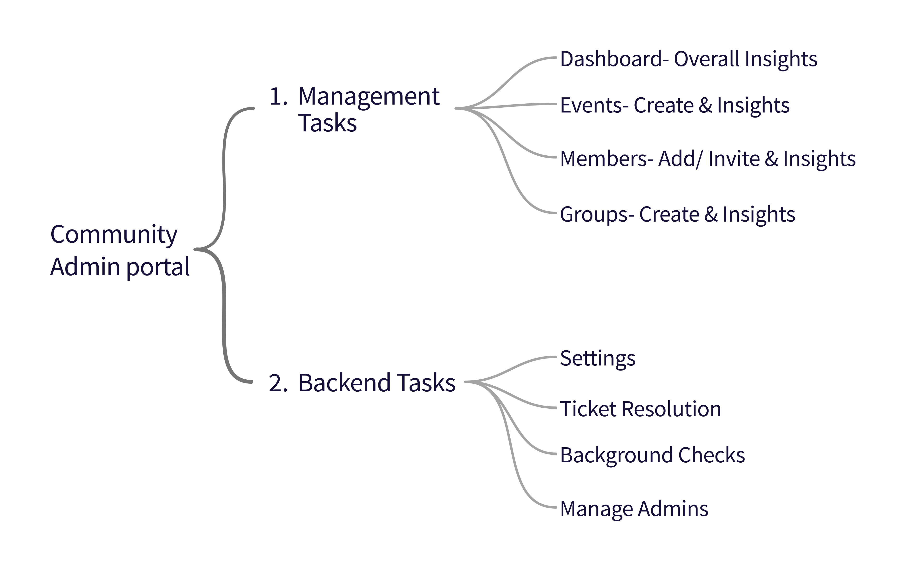
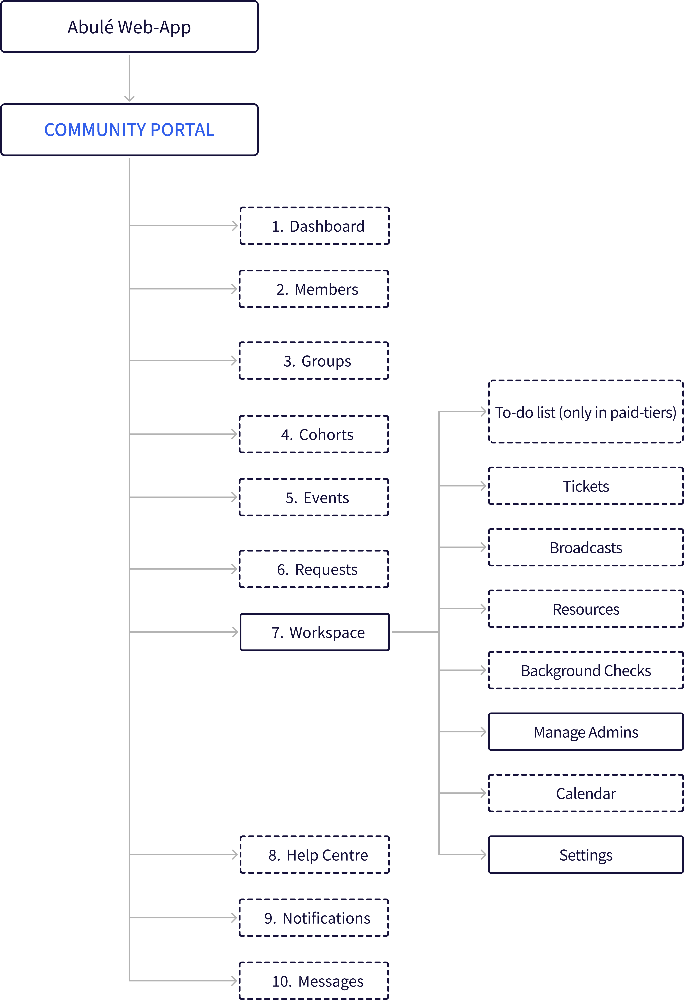
Different admins needed different levels of control in Settings; Owners needed full access, while Admins should not see or touch billing or sensitive setup.
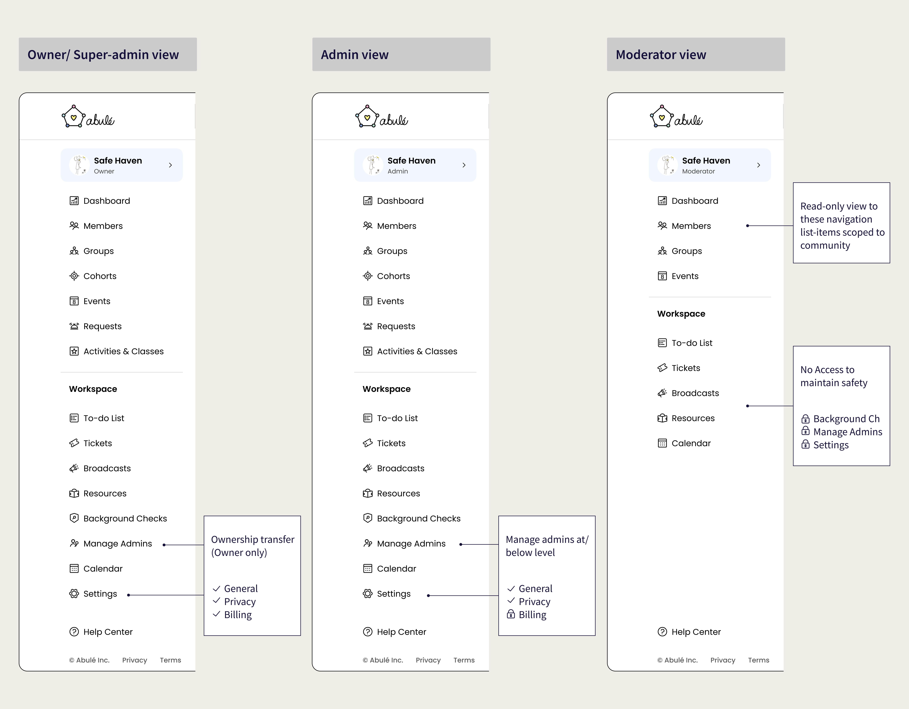
I aligned the founder and the engineering lead on this structure and we established a phased rollout plan that prioritized launch-critical features first.
Phase 1 focused on two sections: Manage Admins and Settings. Without them, communities had to rely on Abulé's support team for plan or billing changes, and a single admin couldn't delegate roles as the community grew, creating bottlenecks that limited scale.

Designing all 10 sections with 6 role levels was the ideal solution but building it end-to-end would have taken far longer than our timeline allowed. So, we agreed to design the full structure upfront but ship it in phases.
I reused the same drawer pattern from the web-app, so the experience felt familiar and was quicker for engineering to build. To support scalability and role-based access from day one, I structured Settings into three tabs:
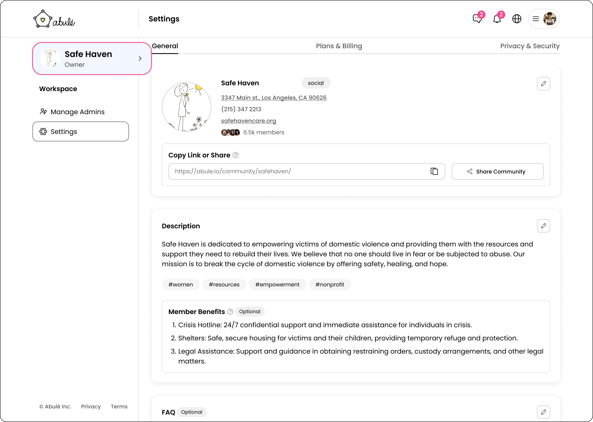
Owners and Super Admins see all tabs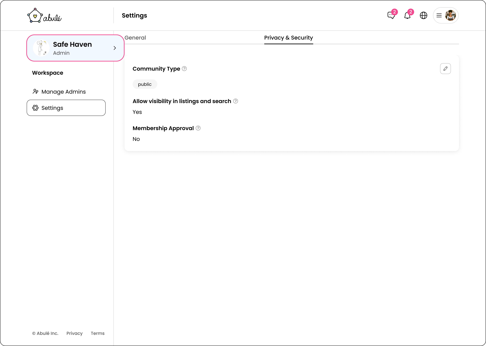
Admins and below only see two tabs: General and Privacy & Security Prototype shows how an Owner uses the Phase 1 admin portal. Under Settings → General: update community info and Settings → Plans & Billing: edit payment methods and upgrade plans.Admins needed to understand roles without accidentally changing permissions while learning. Key design decisions:
- Allowed admins to have multiple roles so one person can manage the community broadly while owning specific groups, without duplicating accounts.
- To reduce mental load and prevent mistakes, I split Manage Admins into two tabs:
- Admins: view all admins in the community, their roles and activity, take quick or bulk actions and add new admins.
- Roles & Access: understand what each role can do and create custom roles (in paid tiers).

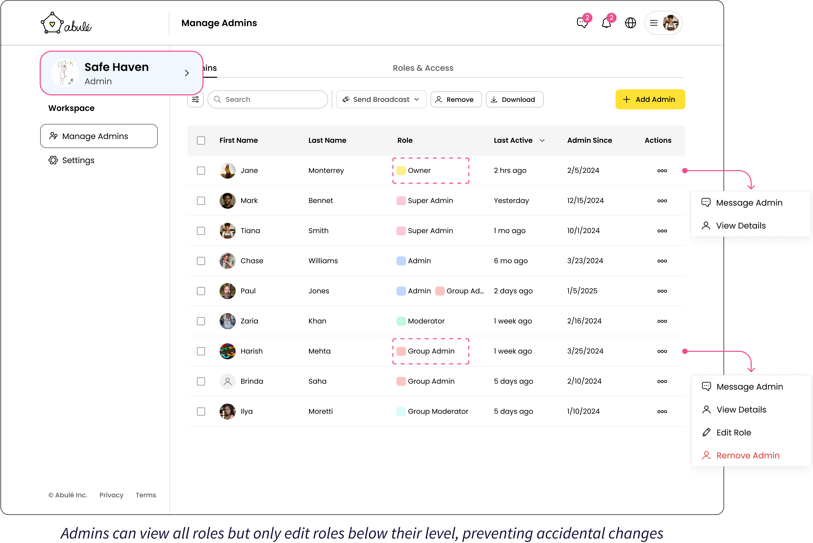
Admin role management with built-in guardrails:
- Roles are color-coded for quick recognition
- Action menus adapt by hierarchy. Admins can only edit or remove roles below their level.
As part of the platform architecture strategy, I designed the Company Portal's Events dashboard to establish UI patterns for the most data-intensive shared area. I designed these components to work for both aggregated (Company) and localized (Community) data, ensuring consistency while reducing future design and engineering effort.
Key patterns established here:
- Overview tab for analytics, Events List tab for management.
- Click charts to drill into event details.
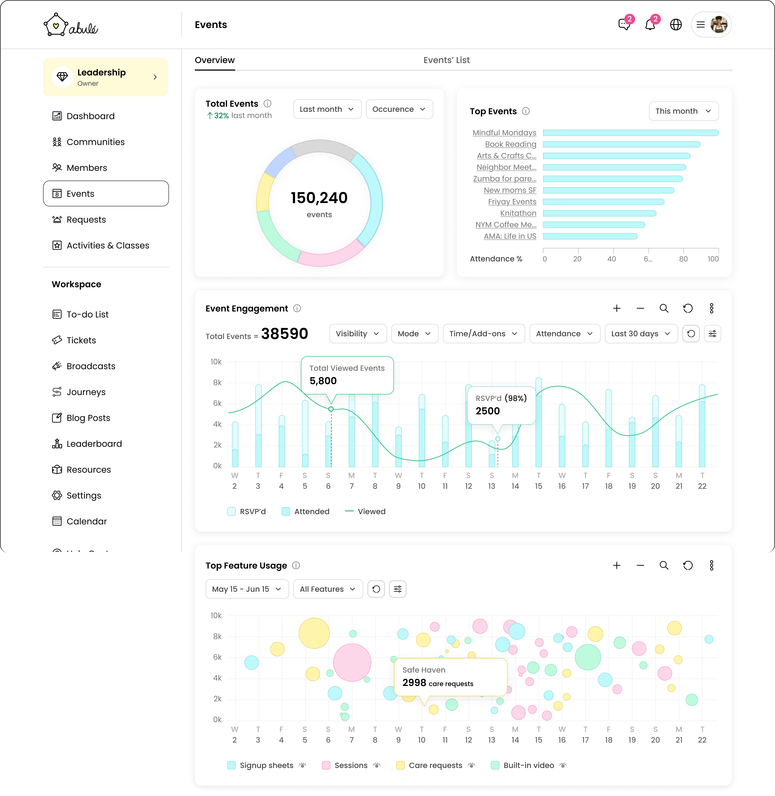
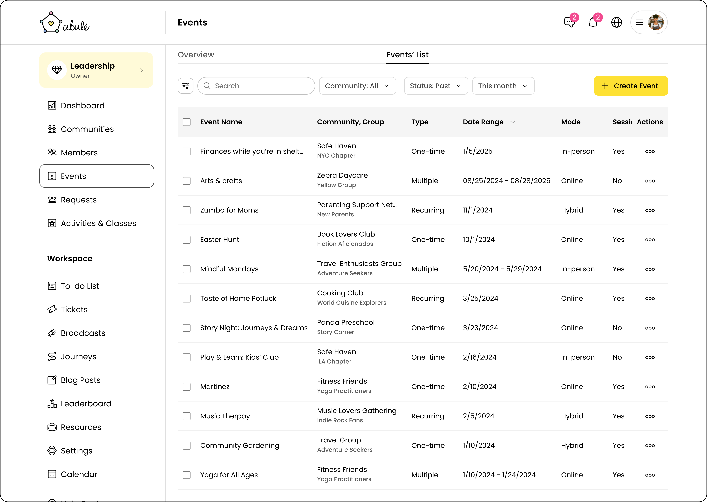
- Multi-layer filtering: community, date range, event type, status.
- Scalable table design (columns, sorting, actions).
What this unlocked:
Self-service setup
Community creators can handle billing and manage admins independently, eliminating support bottlenecks as the platform scales.
25–30% dev time saved
Placing Core Team in Community Portal & reusing web-app patterns gave engineering ~3–4 weeks to focus on member-facing features.
Scalable design
A six-level role system supports everything from solo owners to large admin teams without complex structural changes.
Learnings and Reflections:
In 0→1 work, getting stakeholder alignment on the problem is critical before designing the solution. I spent the first weeks mapping user groups and architecture before touching UI, which did create urgency but helped me turn ambiguity into clarity.
Designing for launch while keeping things scalable was the hardest part. I built only what Phase 1 needed, but defined the full structure upfront so future features could be added without reworking the whole system.
Early engineering alignment saved time. Bringing the engineering lead into architecture and feasibility discussions helped shape realistic solutions, faster.